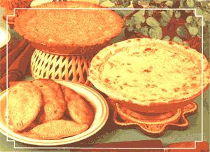

Want to turn your "every" meals into mouthwaterin' treats?
If you're on the lookout for a new way to serve your meat, grain, and potato meals, why not try a main-dish pastry? Most anything can be (deliciously) wrapped up in one of these melt-in-your-mouth crusts, which not only add to the "eye appeal" of food but can also help make a little bit of dinner go a long way ... to accommodate unexpected guests or just stretch that shrinkin' dollar.
Interested? Well, then, here are two tried-and-true pastry recipes-one for individual turnovers (called "pasties") and another for a meal-in-a-dish pie crust-as well as enough filling suggestions to get you started in pastry cookery.
The luscious little pasty (it rhymes with "nasty") originated in Cornwall, England. It's about the handiest carry-along meal imaginable, because a pasty is big enough to satisfy a hearty appetite and small enough to fit easily into a pocket or a school lunchbox.
The key to successful pasty cooking (or to making any filled pastry) is a good crust. If you can keep your dough so cold that the flour will bake before the shortening melts, the crust will come out of the oven flaky and delectable. To assure this result, always [1] begin with cold shortening, [2] work the dough as little as possible, and [3] chill your dough before you roll it.
Ready? OK, mix 2 cups of flour (one each of whole wheat and unbleached white) with I teaspoon of salt. Cut 1/2 cup of cold shortening (margarine, lard, or butter) into the flour and combine the mixture with your fingers until-it forms lumps about the size of split peas.
Then add 5/8 cup of ice water and mix just until the dough comes off the sides of the bowl in one lump (if it won't hold together, add one tablespoon of water at a time until it does). Chill the finished dough in your fridge while you cook the filling. To make a meat pasty filling,
brown 1 pound or so of ground beef and I chopped onion in the "hamburger's" own grease. (if the meat is lean, use a tablespoon or two of oil.) You can also-if you'd llke-saute 1 or 2 cloves of garlic with the meat and onions.
While the above ingredients are slowly browning, cut 2 medium-sized potatoes into 1/2" cubes and boil 'em just until they're tender. Then, drain the spuds and-as you always should-save the vitamin-rich cooking water for use in bread or soup stock. (For variety, you can saute' 2 stalks of chopped celery with the meat, or boil 2 carrots-cut into 1/2" cubes-with the potatoes.) Last of 'all, mix everything together, add a chopped raw onion, and season the filling with salt, pepper, and Worcestershire sauce. Add a couple of chili peppers, too, if you like your food hot.
Some folks prefer a grain-based pasty filling. To make a really hearty grain pasty, begin by heating 3 tablespoons of oil in a saucepan. Saute' a chopped onion in the oil, add I cup of buckwheat, brown rice, or millet, and cook the grain until it starts to brown.
Then, add 2 cups of hot meat or vegetable stock (if no stock is available, just substitute 2 cups of hot water or-if you'd prefer-2 cups of hot water with 3 bouillon cubes dissolved in it), and simmer the mixture until the grain is tender. (Millet will have to cook about 20 minutes, buckwheat half an hour, and brown rice 45 minutes.)
Let the grain and broth simmer while you cut, cook, and drain 2 medium-sized potatoes as directed In the meat filling recipe above.
Finally, mix all of the ingredients together and add a raw chopped onion. (Or, if you want some "extras" chop 1 or 2 sticks of celery, a couple of carrots, a stalk of broccoli, or a quarter head of cabbage into the grain five minutes before you remove the pan from the stove. These vegetables don't need to simmer long, as they'll get "done" while the pasty bakes.) Season this "stew" with lots of pepper (at least 1- 1/ 2 teaspoons) and either soy sauce or salt to taste.
Obviously, the Cornish pasty can accommodate most any filling, so use whatever ingredients you have around. Combine grains with meats, for instance (or mix together two different grains) and throw in a variety of vegetables. It's nearly impossible to make a bad pasty filling.
If you want eight large (meal-sized) pasties, just divide your dough into eight equal parts. Use a rolling pin-and only enough flour to prevent sticking-to roll each piece Into a circle about 1/4" thick. Place the discs on a greased cookie sheet and heap filling onto half of each circle. (if you want, put a two-inch square of thinly sliced cheese on top of the filling ... it'll melt in the oven.)
Now, fold each pasty over its filling and crimp the edges closed with your thumb and forefinger. When this is done, beat together 1 egg yolk and 2 teaspoons of water, and "fingerpaint" this glaze onto the tops of the pastiies. Be sure to prick the top of each pie with a fork-in several places-to let steam escape and keep the inside upper crust crispy.
Bake your pasties for 10 minutes at 400°F. (it's best if you prick 'em again at this point ... the glaze sometimes seals up the original holes.) Then, reduce the oven to 3750 and continue to cook the tarts until they're golden brown. Serve these treats hot or cold for dinner or lunch ... either way they'll be gobbled up before you know it!
The flaky pastry described above will make a fine pie shell, or, as an alternative, you could mix up a nutty and crumbly oil crust. The latter doesn't "travel" as well as pasty dough does, but-since folks aren't likely to carry a piece of pie in their pockets-the extra "crumbliness" won't be a problem.
If you'd like to try an oil crust, mix together 2 cups of whole wheat flour and 1- 1/2 teaspoons of salt, and - in a separate container-beat 1/2 cup of oil and 1/4 cup of ice water. Toss these two mixtures together with a fork until the dough barely forms one lump. If it's too dry, add a few more drops of oil and toss the dough again.
Roll the (unchilled!) crust between two sheets of wax paper, then peel off the top sheet, turn the crust over into your pie tin, and remove the remaining piece of paper. Either this dough recipe or the one for "flaky" pastry will make a huge one-crust pie (baked in a 10inch skillet) or two shallower nine-inch one-crust pies.
Any pasty filling will taste great in a pie, too. And, since pies lend themselves to soupier fillings, a basic meat, potatoes, and gravy recipe would also be delicious. I've found, however, that some of the best main-dish pie recipes would be a little unusual if served in any other way. My cheese and potato filling is a good example of this:
First, cube (to 3/4") 5 medium-sized potatoes, boll 'em till they're tender, and drain 'em. While the potatoes are boiling, steam 2 cups of chopped carrots or 1 stalk of chopped broccoli (or both) for five minutes and begin the cheese sauce.
To make this sauce, melt 1/4 cup of butter or margarine in a saucepan, add 1/4 cup of whole wheat flour, and-stirring well-cook the mixture over low heat for five minutes ... after which you should slowly pour in 2 cups of hot milk while stirring constantly.
Then, add I to 2 cups of grated cheese-cheddar, Jack, Muenster, or Swiss-and cook over medium heat (still stirring) until the mixture thickens. Season this filling to taste with salt and pepper and-if you'd like-a teaspoon of celery seed and a pinch of nutmeg or paprika.
Finally, mix the potatoes, sauce, and steamed vegetables together. (You can add a 6-ounce can of tuna, 2 or 3 boiled eggs, or about a cup of drained canned peas, corn, or green beans, tool)
Pour the finished filling into a pastry shell (wheat germ or bread crumbs- sprinkled on top-will add a "finished" touch) and bake the pie at 375'F until the crust is brown and the filling bubblin' hot.
And, again, you can vary the recipe by using grains. Substitute 3 cups of cooked rice, millet, buckwheat, cracked wheat, or bulgur for the potatoes, for instance, or combine any two of the grains to replace the spuds. Imagination is the key to a delicious filling.
Quiche Is a delicious main-dish pie, and it's as easy to make as It is nutritious. Use the flaky (pasty) dough recipe to make two small one-crust pie shells. Prick the bottom of each crust In half a dozen different places and then chill the shells while you make the filling,
The "heart" of your quiche starts with 1/2 pound of sliced bacon, cut into one-inch lengths. Cook these until they're crisp, pouring off the grease as it accumulates, and drain 'em on a paper towel.
With that done, beat 4 eggs and add 1-3/4 cups of milk ... or- if you don't mind the extra butterfat-light cream. Season the mixture with 1 teaspoon of salt, 1/2 teaspoon of pepper, and a pinch of cayenne and/or nutmeg. Then add 1/2 pound of grated cheddar, Swiss, Jack, or Muenster cheese.
Next, sprinkle the bacon over the bottom of each pie shell, and then pour in the filling (be sure to divide the mixture evenly between the two pies). Bake your delicacies at 3750F for 35 to 40 minutes ... or until the tops are browned and a knife inserted halfway between the center and the rim of each pie comes out clean. Let the quiches cool for at least 10 minutes before you cut and serve 'em.
Once you get the hang of it, you'll find yourself making all kinds of filled pastries. Maybe you'll want to top your favorite casserole with biscuit dough to make an "instant pie", for example, or use a three-inch biscuit cutter to make miniature pasties for appetizers.
But, whatever pastry you make, never be afraid to experiment. After all, what could go wrong when you have your dinner "all wrapped up"?
|
 STAFF PHOTO |
|
|